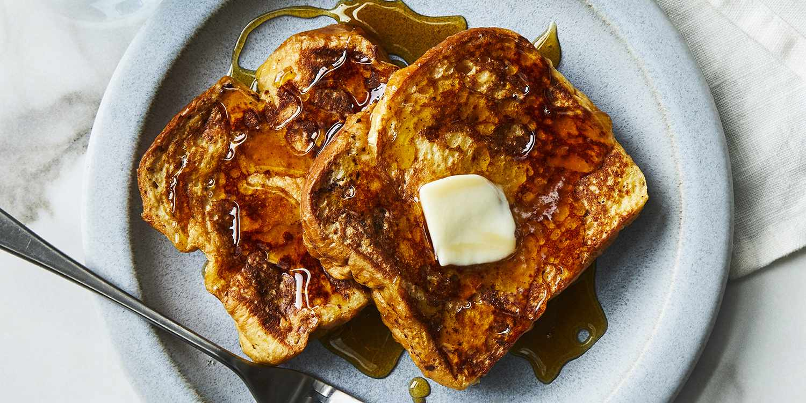

French Toast

Description:
A hearty, wholesome addition to any breakfest.
Ingredients
- Brioche or Holla bread, preferably unsliced
- Three eggs
- 1 tsp ground cinnamon
- 1/2 tsp sea salt
- 1/2 tbsp brown sugar
- A pinch of nutmeg
- 1/2 cup of heavy cream
- 3/4 cup of whole milk
Steps
- Slice your bread to your preferred thickness
- Mix together the rest of the ingredients in a large, flat baking pan
- Lay your bread slices, and lather each side with the mix
- Start a pan on the stove, and melt some butter
- Once the pan is hot enough, start toasting your bread slices
- You won't need to cook the slices any longer than 15-20 seconds on medium to high heat
- Voila! Your French Toast is ready to be served!
back